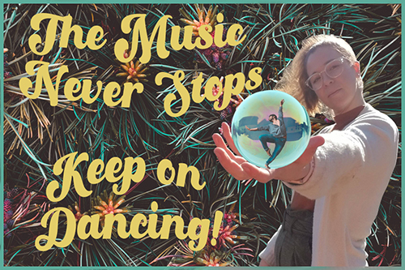

For this project was called "Selfie". You were to take a picture of yourself, and using PHotoshop, make a picture. I gathered some ideas about what I wanted to do. I came up with this final picture. I like to dance, so had a man dancing in a buble and used a font called "Disco" to spell out " The music never stops, keep dancing." I wanted to choose a font that gave movenment.
